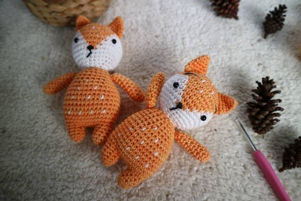

About Amigurumi
Amigurumi is the Japanese art of knitting or crocheting small stuffed animals and anthropomorphic creatures.
It is a popular hobby among crafters around the world.
Amigurumi creations are typically made with yarn and stuffed with fiberfill or other soft materials.
To learn more about amigurumi you can visit the Wikipedia page: Wikipedia Page for Amigurumi
